The field guide to local creator marketing
238 guides · Updated November 16, 2026
Magpie Learn
Practical guides for local creators and the businesses that book them. No fluff and no jargon: the numbers, the steps and the rules, in plain language.
211 guides, newest first
The latest
- Nov 16, 2026Do you need a platform, or can you just DM creators yourself?5 min
- Nov 16, 2026Local influencer marketing when you run more than one location4 min
- Nov 16, 2026How much does it cost to book a local micro influencer?5 min
- Nov 16, 2026How local creators find paid brand deals4 min
- Nov 16, 2026Find local nightlife influencers to pack your bar5 min
- Nov 16, 2026Find local micro influencers for your yoga studio5 min
- Nov 16, 2026How small cafes find micro influencers with local followers5 min
- Nov 16, 2026Which platform finds local influencers by follower count and location?5 min
- Nov 16, 2026Do local influencer platforms handle payment and contracts, or just introductions?5 min
- Nov 16, 2026The Collabstr alternative built for local businesses4 min
- Nov 16, 2026Book local beauty influencers for your grand opening4 min
Rates & getting paid
What to charge, what things cost, and how to make sure the money actually lands.
14 guidesHow much does it cost to book a local micro influencer?
The two honest numbers: a comped visit costs the experience itself, a paid booking costs the creator's own rate, and plans start at $199 a month.How much should you charge for a sponsored post?
The per-post pricing math: tier bands, what moves you inside them, and usage and exclusivity as separate line items.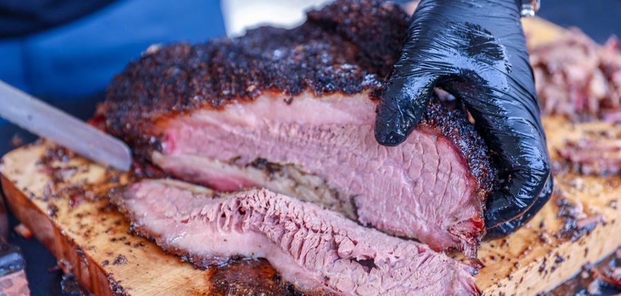
For businesses · Rates & getting paidHow much does it cost to hire a local influencer?
The buyer's budget view: a comp at product cost, a paid post from $50, or a founding plan, and what each level includes.What a fair exclusivity clause looks like for a local creator
Category, place, and a short window, priced as its own line item. What fair exclusivity includes, what to refuse, and the sentence to send back.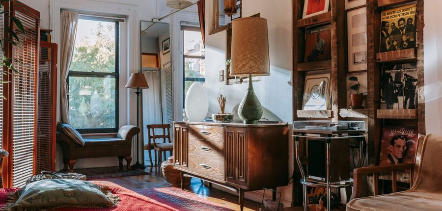
For creators · Rates & getting paidHow to negotiate a brand deal without an agent
Anchor on the deliverable and the term, trade scope instead of cutting your price, and lock the final deal in one written message.How many revisions should a brand get?
One round of small fixes, corrections always free, and a reshoot is new work: how to set the revision number before the visit, in writing. For creators · Rates & getting paid
For creators · Rates & getting paid
Usage rights in perpetuity: the clause that takes your content forever
In perpetuity means forever: what the clause really grants, what it costs, and the fair term to ask for instead: 90 days, priced, approved.Net 90 is not a payment term: how creators actually get paid on time
Your post is live today and already working for the brand. Net 90 asks you to wait a full quarter to get paid for it. Here is the structure that pays when the post goes live. For creators · Rates & getting paid
For creators · Rates & getting paid
How do I make sure I actually get paid?
Paid bookings are charged up front and held until your post is live. Here is the whole chain. For creators & businesses · Rates & getting paid
For creators & businesses · Rates & getting paid
Is a comp enough, or do I owe cash too?
The two lanes explained: comp, or paid at the creator's own rate. Never both on one visit. For creators · Rates & getting paid
For creators · Rates & getting paid
Are comped meals and free services taxable income?
Yes. Fair market value is income. The thresholds, and the record habit that keeps it simple. For creators · Rates & getting paid
For creators · Rates & getting paid
Your creator profile is your rate card
A complete profile with your local reach, categories, and rate on it does the pitching for you. For creators · Rates & getting paid
For creators · Rates & getting paid
How much should a small creator charge?
Published rate guidance by tier, the 6 percent fee math, and when to raise your rate.How much do local micro-influencers cost?
Real numbers: comped visits at $0 cash, paid posts at the creator's own rate from $50, and plan pricing from $199 a month.Comped visits
The comped lane, explained honestly: what a comp is, how to earn one, and the rules that keep it fair.
41 guidesHow to get comped meals in Washington DC
14th Street to H Street: getting comped across DC dining neighborhoods.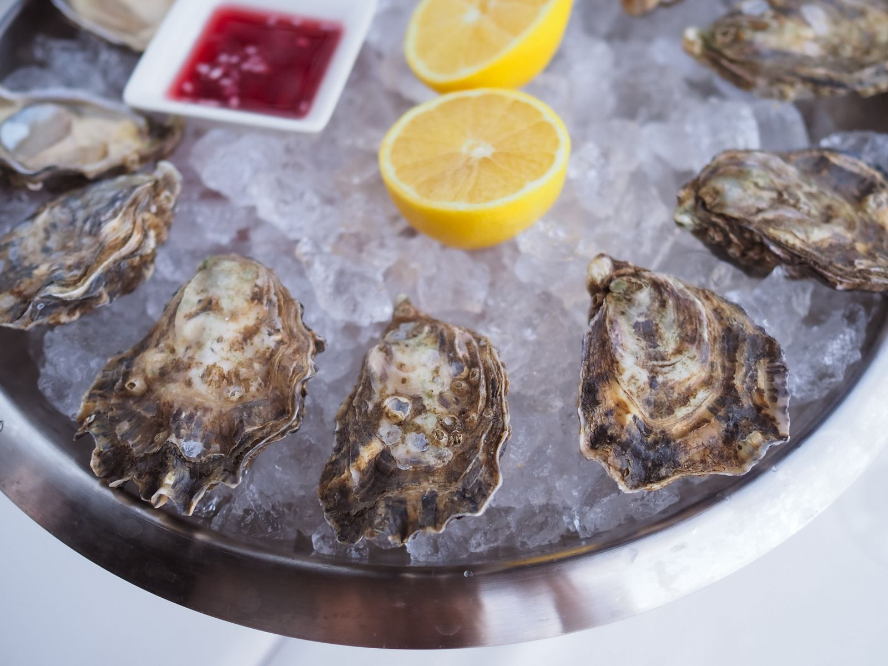
For creators · Comped visitsHow to get comped meals in Virginia Beach
Lynnhaven oysters and Shore Drive seafood: the comped table guide for Virginia Beach creators. For creators · Comped visits
For creators · Comped visits
How to get comped meals in Toronto
Peameal bacon and strip-mall gems: getting comped across Toronto.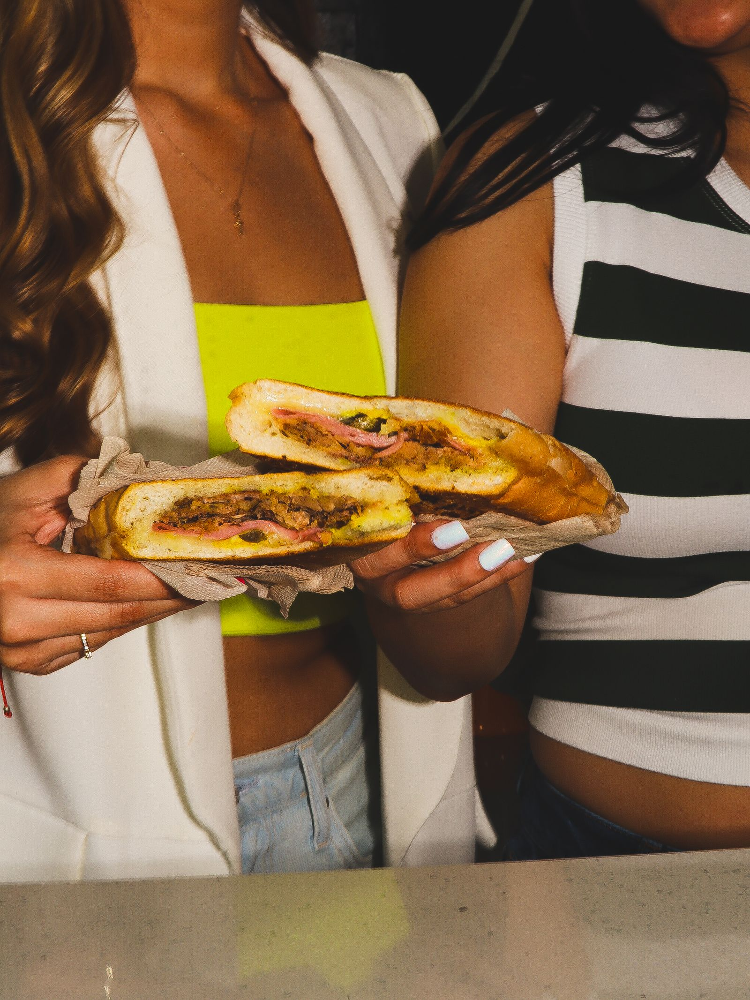
For creators · Comped visitsHow to get comped meals in Tampa
Ybor lunches and grouper sandwiches: getting comped as a Tampa creator.How to get comped meals in Seattle
Pho on Rainier and market mornings: getting comped as a Seattle creator.How to get comped meals in San Diego
California burritos and Convoy counters: getting comped across San Diego.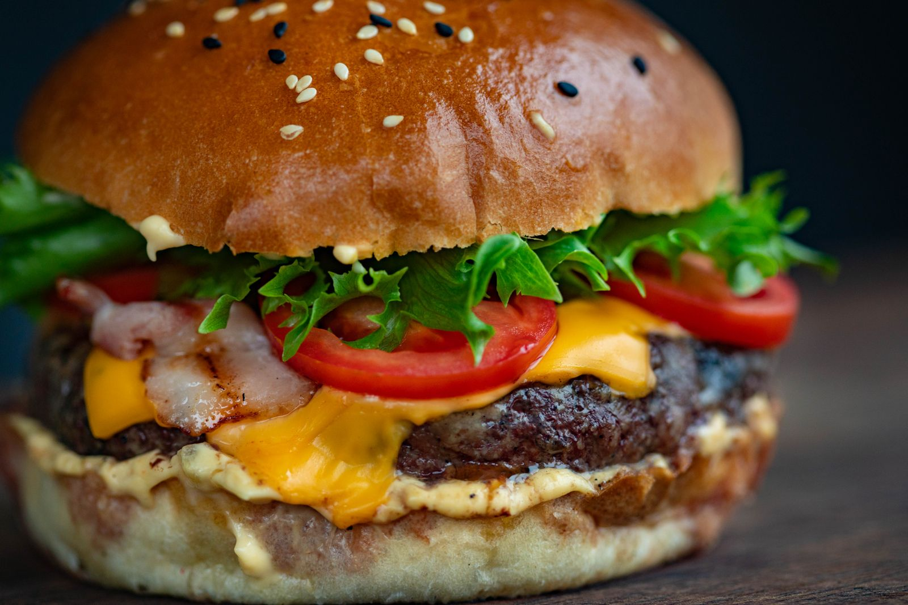
For creators · Comped visitsHow to get comped meals in Salt Lake City
Pastrami burgers and soda shops: getting comped as a Salt Lake City creator.How to get comped meals in Richmond
Barbecue boards and bakery boxes: the comped visit guide for Richmond creators.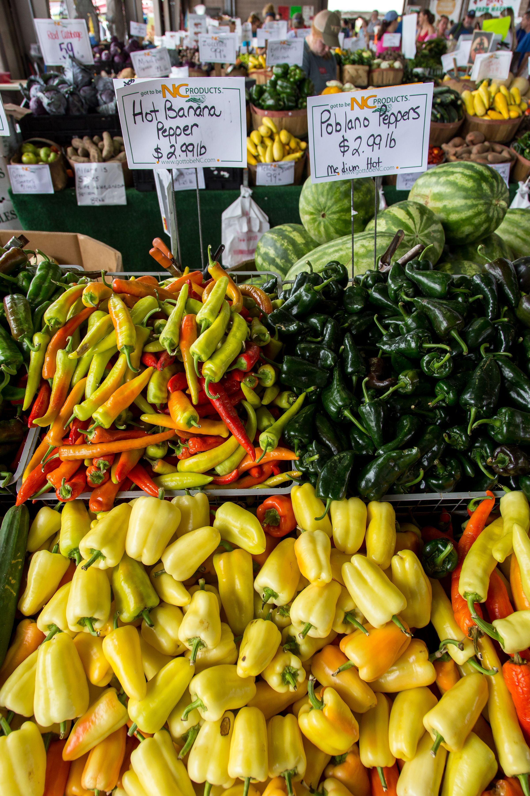
For creators · Comped visitsHow to get comped meals in Raleigh
Whole-hog barbecue and downtown lunches: getting comped as a Raleigh creator.How to get comped meals in Phoenix
Sonoran hot dogs and Roosevelt Row: getting comped across the Valley.How to get comped meals in Orlando
Mills 50 pho to Winter Park brunches: getting comped as an Orlando creator.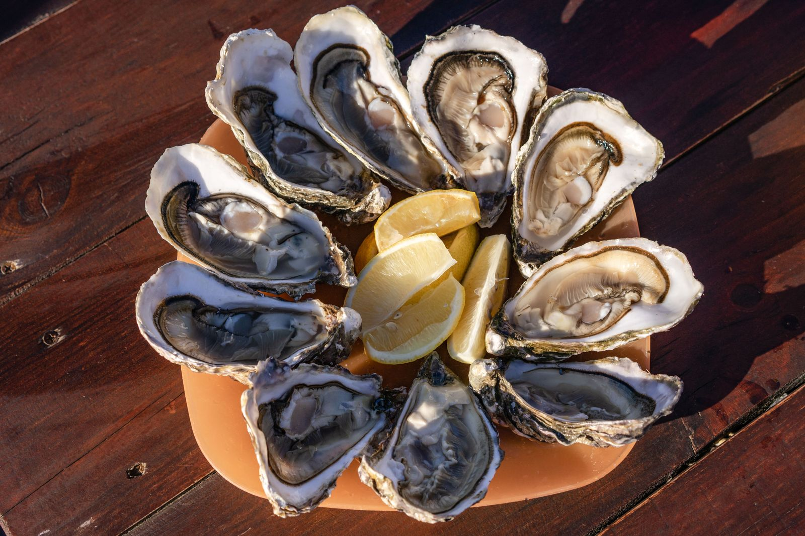
For creators · Comped visitsHow to get comped meals in Norfolk
Colley Avenue dinners and Ocean View seafood: getting comped across Norfolk neighborhoods. For creators · Comped visits
For creators · Comped visits
How to get comped meals in New York City
Jackson Heights to Arthur Avenue: getting comped across the five boroughs.How to get comped meals in New Orleans
Beignets and corner stores: getting comped as a New Orleans creator.How to get comped meals in Nashville
Hot chicken counters to 12 South cafes: getting comped in Music City without chasing the bachelorette crowds.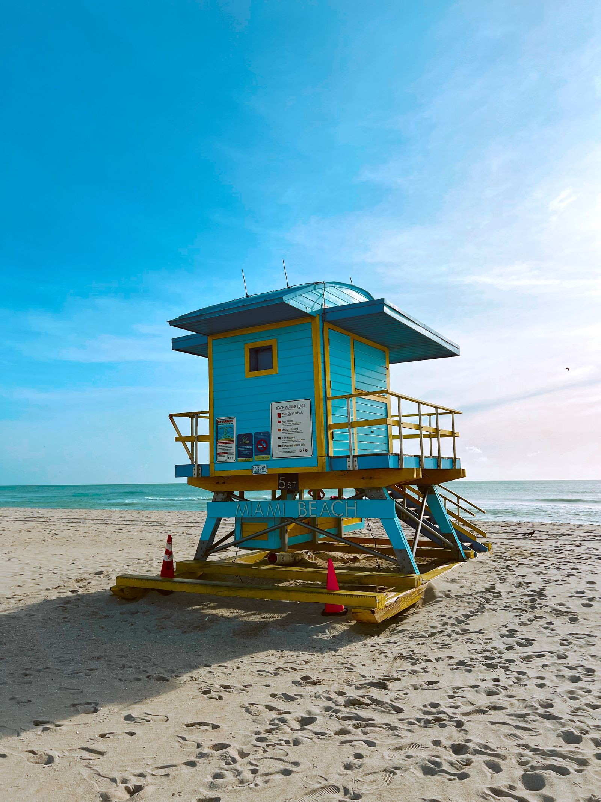
For creators · Comped visitsHow to get comped meals in Miami
Cafecito windows and stone crab season: getting comped as a Miami creator.How to get comped meals in Los Angeles
Taco trucks and strip-mall sushi: getting comped across Los Angeles neighborhoods.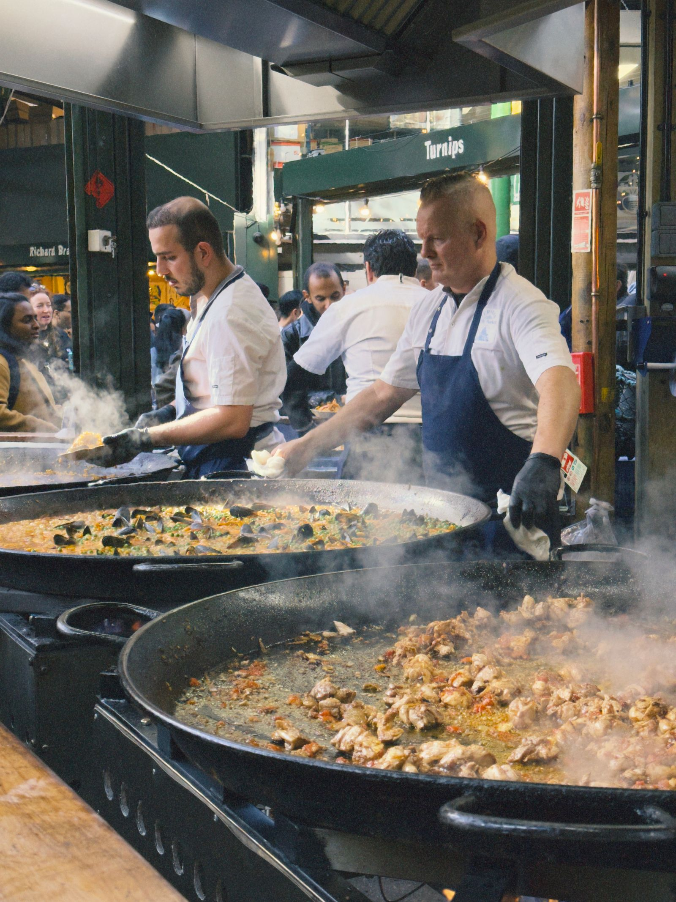
For creators · Comped visitsHow to get comped meals in London
Market stalls and Sunday roasts: getting comped as a London creator.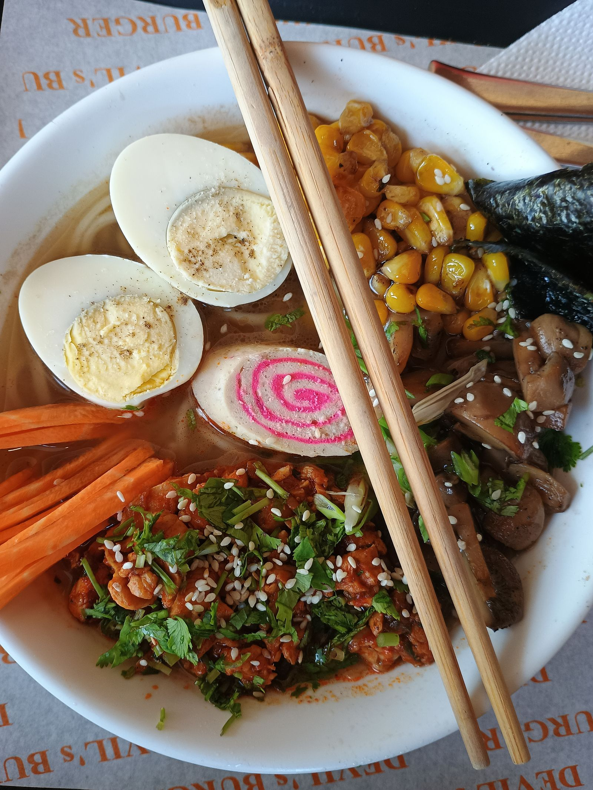
For creators · Comped visitsHow to get comped meals in Las Vegas
Spring Mountain ramen and post-shift sushi: getting comped off-Strip.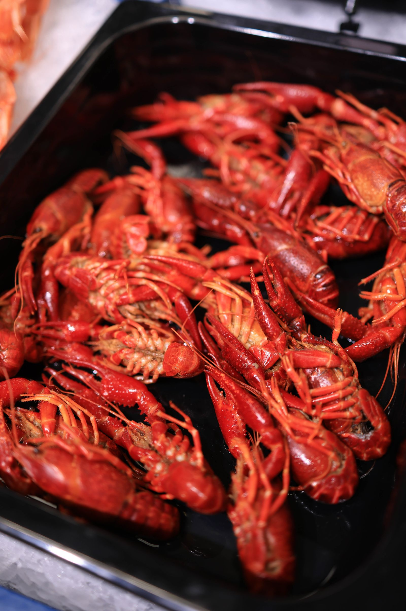
For creators · Comped visitsHow to get comped meals in Houston
Viet-Cajun crawfish and Bellaire Boulevard: getting comped across Houston.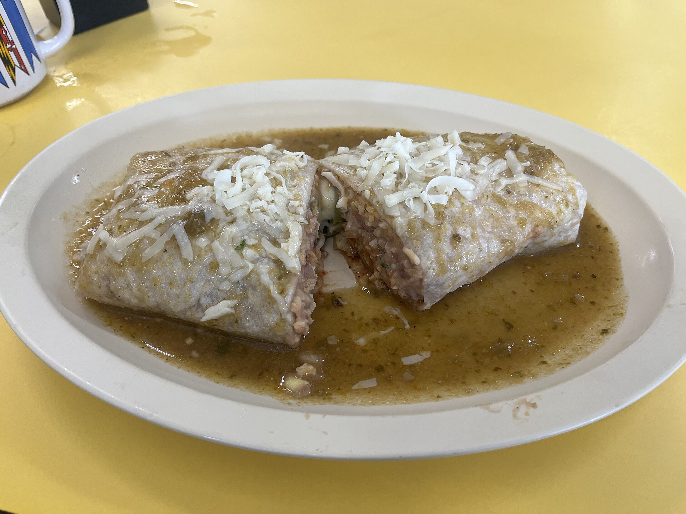
For creators · Comped visitsHow to get comped meals in Denver
Food halls and Colfax corridors: getting comped as a Denver creator.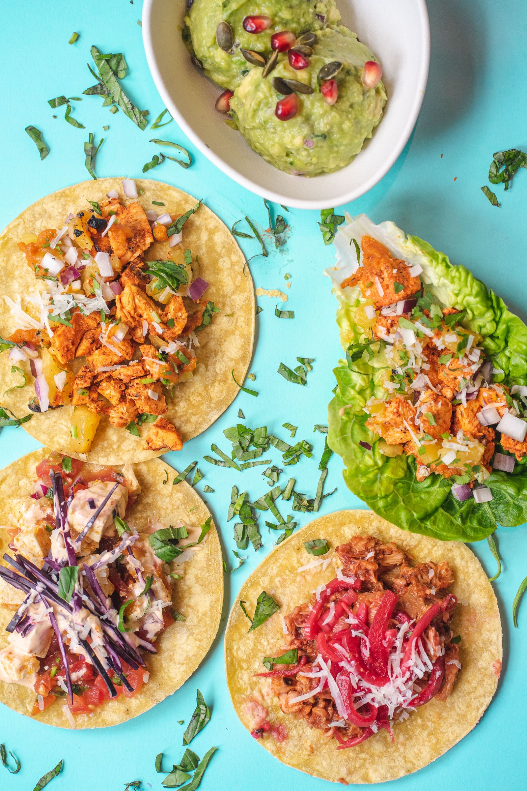
For creators · Comped visitsHow to get comped meals in Dallas-Fort Worth
Brisket, queso and the Stockyards: getting comped across Dallas-Fort Worth.How to get comped meals in Chicago
Tavern-style pizza and Italian beef: getting comped as a Chicago creator.How to get comped meals in Boston
North End counters and oyster happy hours: getting comped as a Boston creator.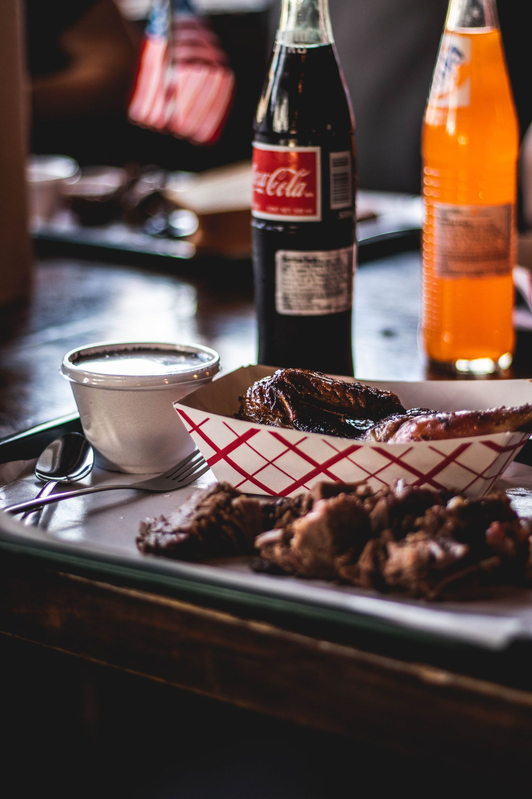
For creators · Comped visitsHow to get comped meals in Austin
Food trucks, queso and East Austin counters: the comped playbook for Austin creators.How to get comped meals in Atlanta
Lemon pepper wings and food halls: getting comped as an Atlanta creator.How to get comped meals and experiences as a local creator
Meals, services, stays and things to do: the full comp playbook, from the first ask to a regular gig.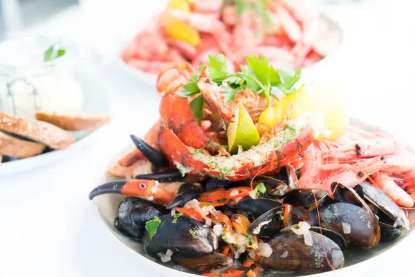
For creators · Comped visitsHow food creators get booked in Virginia Beach
How Virginia Beach food creators earn comped meals and paid bookings, ranked by local reach.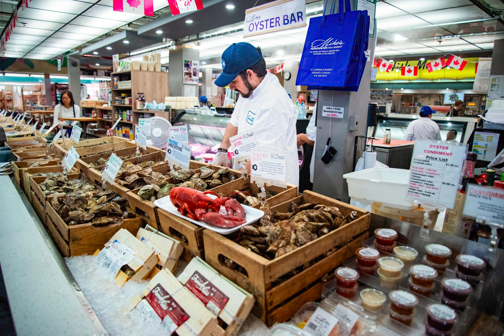
For creators · Comped visitsHow food creators get booked in Toronto
Toronto food creators get comped meals and paid bookings by proving local reach and reliability.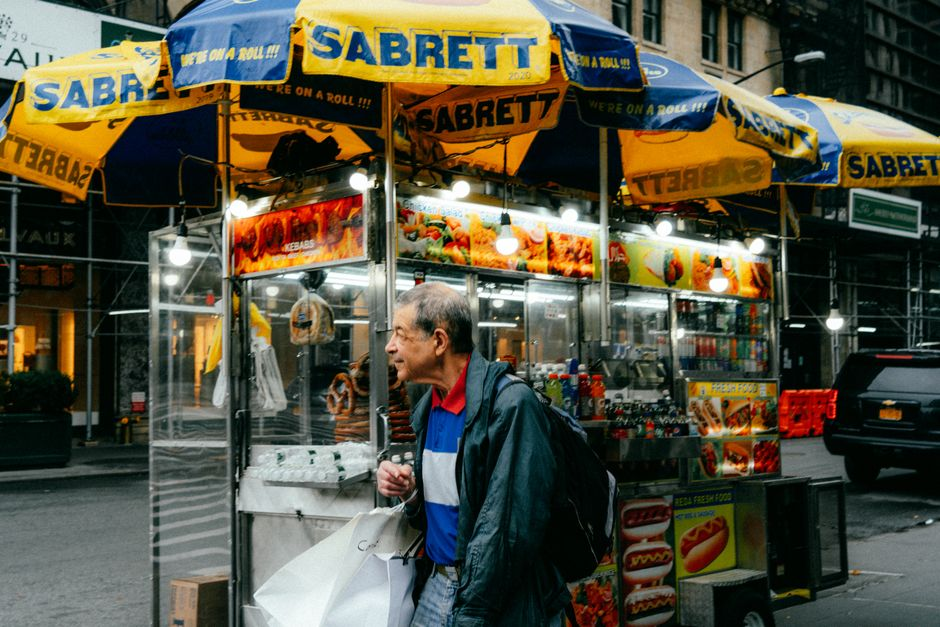
For creators · Comped visitsHow food creators get booked in New York City
How New York City food creators turn neighborhood followings into comped meals and paid bookings.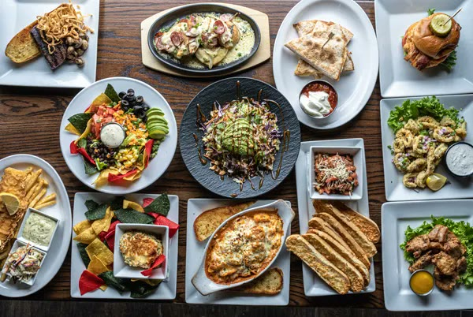
For creators · Comped visitsHow food creators get booked in Nashville
How Nashville food creators turn local reach into comped meals and paid bookings, neighborhood by neighborhood.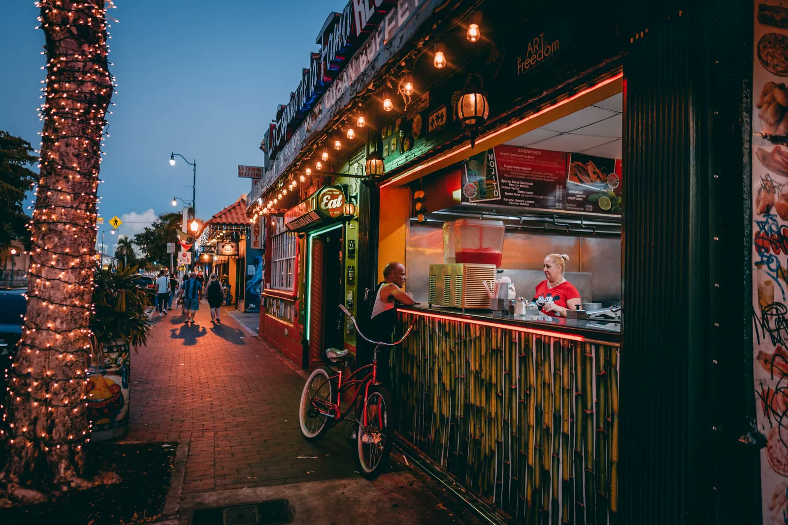
For creators · Comped visitsHow food creators get booked in Miami
Miami food creators get comped meals and paid bookings by proving local reach from Calle Ocho to Wynwood and delivering on time.How food creators get booked in Los Angeles
How Los Angeles food creators turn a trusted neighborhood pocket into comped meals and paid bookings.How food creators get booked in Austin
How Austin food creators turn regular posts into comped meals and paid bookings at their own listed rate.How food creators get booked in Atlanta
Atlanta food creators get comped meals and paid bookings by ranking on local reach from Buford Highway to Decatur.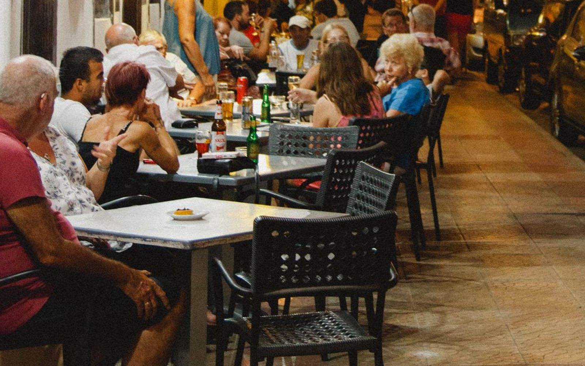
For businesses · Comped visitsShould I give influencers free food for posting?
When a comp earns its keep, what a fair comp is, and what to require in return.How do I get comped experiences beyond food?
Salons, spas, gyms, shops and things to do: comping is a cross-category habit, not a restaurant thing. For creators · Comped visits
For creators · Comped visits
How to turn one comped visit into a paid regular gig
The playbook for turning a strong first visit into a report, a rate, a rebooking and a rhythm.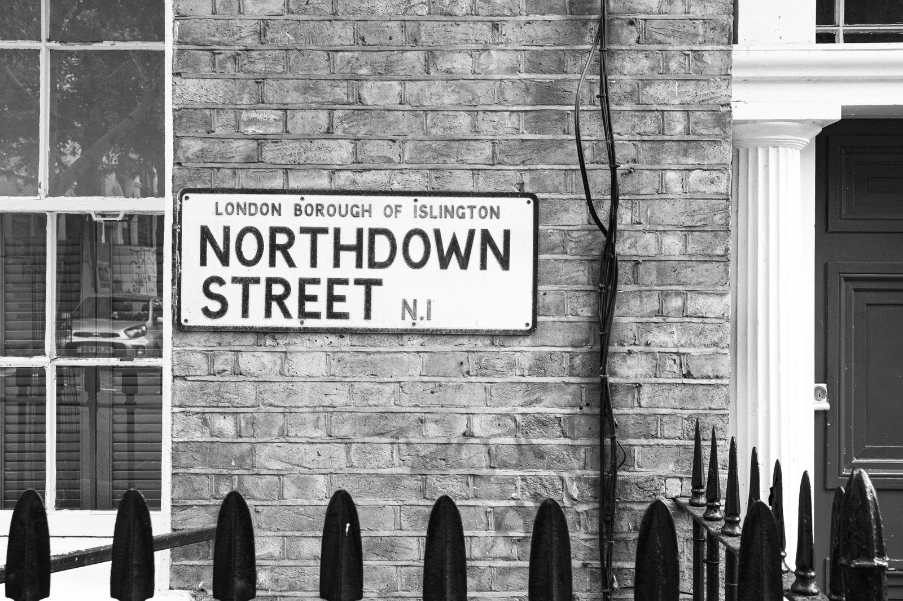
For businesses · Comped visitsFTC disclosure for comped posts
A free meal is a material connection. What the FTC requires, in posts and stories, in plain language.What is a comped creator visit?
The Standard Visit explained: one post, one story sharing the post, the 48-hour goal, honest and disclosed. For creators · Comped visits
For creators · Comped visits
How to get comped meals as a food creator
How comped visits work, what restaurants expect, and the disclosure rules done right.Finding work
Brand deals and bookings for small, local creators, from the first pitch to a regular gig.
54 guidesHow local creators find paid brand deals
Local creators find paid brand deals where local businesses look: free to join, found by local reach, paid at your own rate.How to pitch a local business as a small creator (with a sample pitch)
Three copy-ready pitches, restaurant, salon and DM, with a line-by-line breakdown of why each one works. For creators · Finding work
For creators · Finding work
How to get invited to restaurant openings and launches as a local creator
How opening lists get built, and how a local creator gets on one before the doors open.How to get brand deals in Washington DC
Half-smokes and embassy rows: how DC creators turn neighborhood posts into brand deals.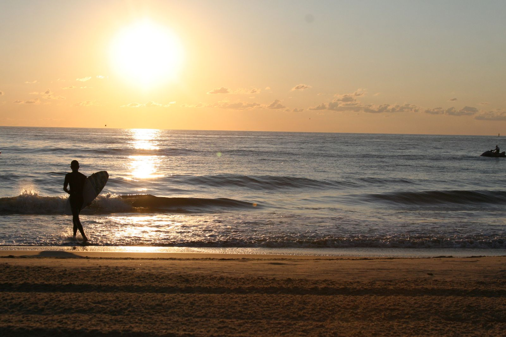
For creators · Finding workHow to get brand deals in Virginia Beach
Oceanfront energy, locals' rates: how Virginia Beach creators turn beach-season posts into year-round deals.How to get brand deals in Toronto
Kensington to Scarborough: how Toronto creators turn multicultural food posts into brand deals.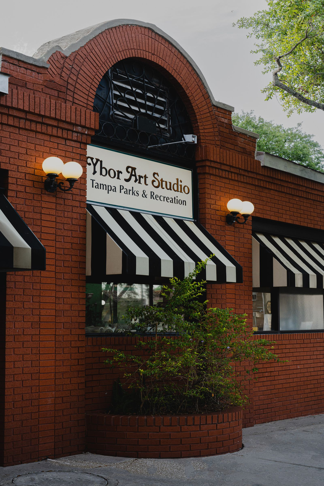
For creators · Finding workHow to get brand deals in Tampa
Cuban sandwiches and Seminole Heights: how Tampa creators land deals neighborhood by neighborhood.How to get brand deals in Seattle
Teriyaki, pho and Pike Place: how Seattle creators land deals neighborhood by neighborhood.How to get brand deals in San Diego
Fish tacos and fierce neighborhoods: how San Diego creators land local brand deals.How to get brand deals in Salt Lake City
Fry sauce and valley neighborhoods: how Salt Lake City creators land deals along the Wasatch Front.How to get brand deals in Richmond
Murals, Carytown and Scott's Addition: how Richmond creators turn neighborhood posts into brand deals.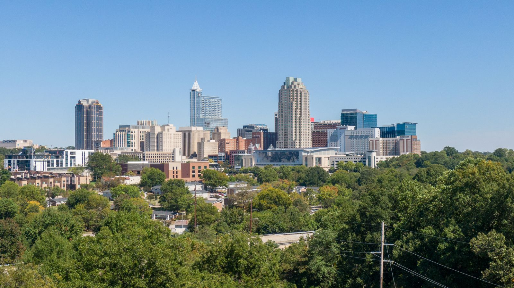
For creators · Finding workHow to get brand deals in Raleigh
City of Oaks creators: turning farmers market posts and Five Points regulars into brand deals.How to get brand deals in Phoenix
One Valley, many corners: how Phoenix creators turn their side of the metro into deals.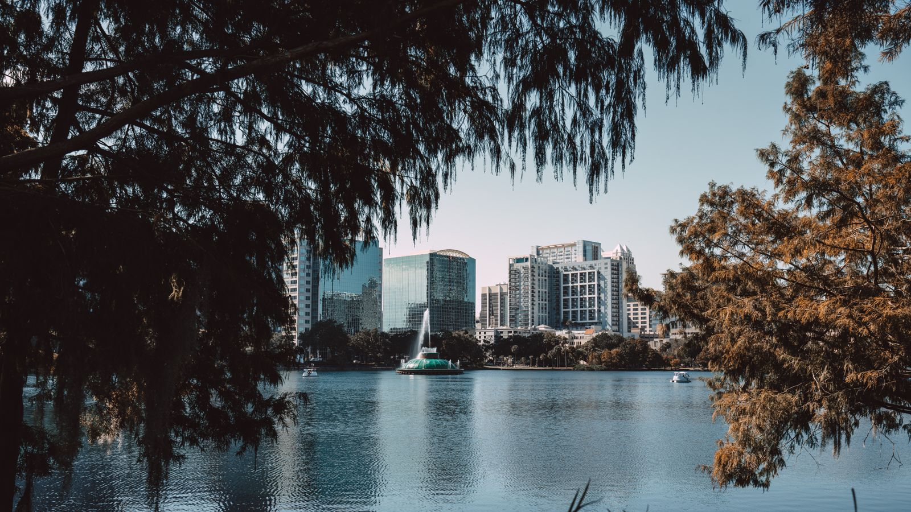
For creators · Finding workHow to get brand deals in Orlando
The Orlando tourists never see: how local creators turn resident audiences into brand deals.How to get brand deals in Norfolk
Ghent to Granby Street: how Norfolk creators land deals in a navy town with a real arts streak.How to get brand deals in New York City
Your market is a few subway stops: how NYC creators land deals borough by borough.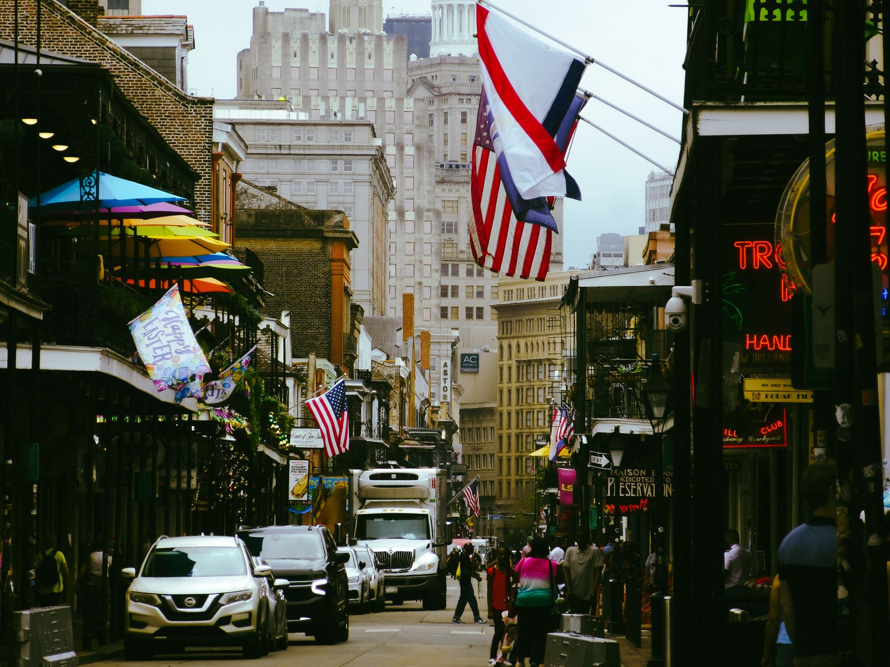
For creators · Finding workHow to get brand deals in New Orleans
Po'boys and second lines: how New Orleans creators land deals neighborhood by neighborhood.How to get brand deals in Miami
Wynwood to Little Havana: how Miami creators turn bilingual, neighborhood posts into brand deals.How to get brand deals in Los Angeles
Nobody crosses LA for dinner: how creators turn one side of the city into brand deals.How to get brand deals in London
Borough to Brixton: how London creators turn their corner of the city into brand deals.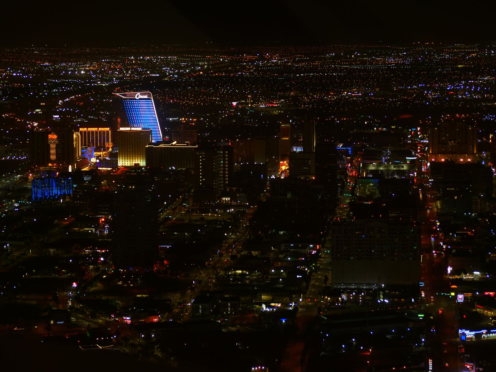
For creators · Finding workHow to get brand deals in Las Vegas
Locals' Vegas pays better than the Strip: how resident creators land brand deals.How to get brand deals in Houston
Your market is your side of the loop: how Houston creators land local brand deals.How to get brand deals in Denver
Green chile and food halls: how Denver creators land deals neighborhood by neighborhood.How to get brand deals in Dallas-Fort Worth
Two downtowns, one metro: how DFW creators land deals on their side of the Trinity.How to get brand deals in Chicago
Logan Square to Pilsen: how Chicago creators land deals neighborhood by neighborhood.How to get brand deals in Boston
Cannoli, T lines and college blocks: how Boston creators land deals neighborhood by neighborhood.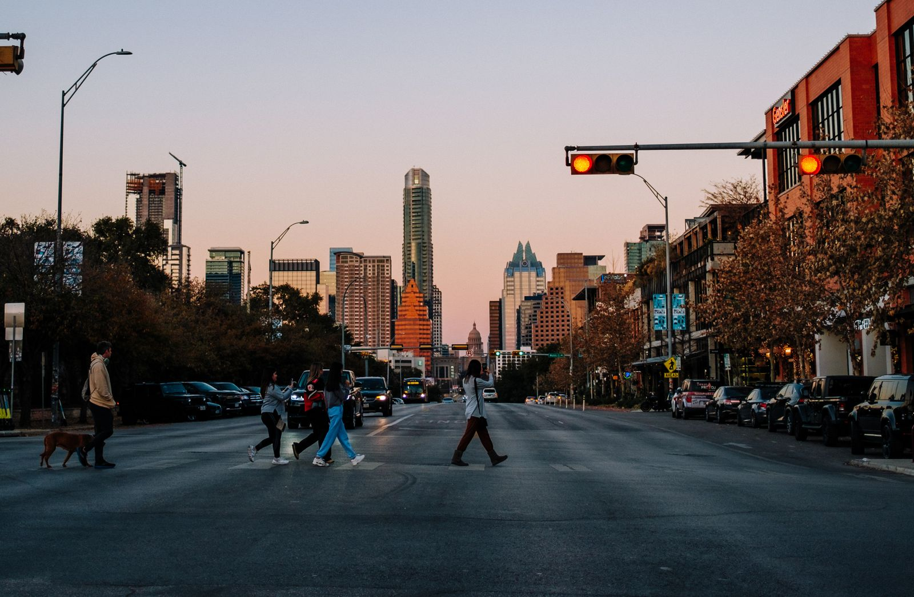
For creators · Finding workHow to get brand deals in Austin
Breakfast tacos and brisket lines: how Austin creators land deals beyond festival weeks.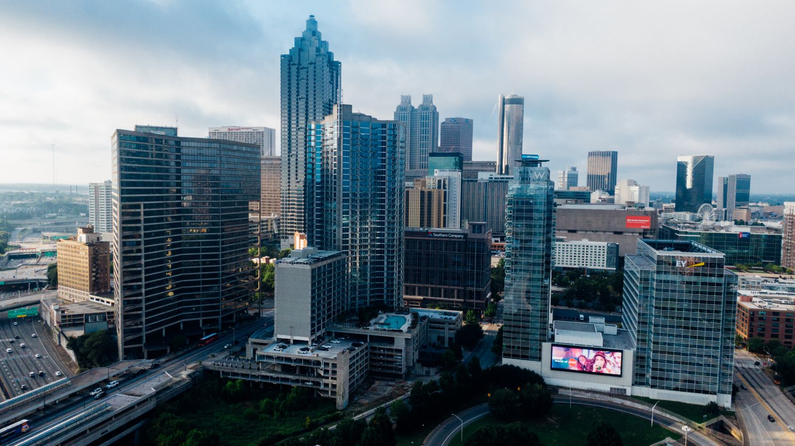
For creators · Finding workHow to get brand deals in Atlanta
Buford Highway to the BeltLine: how Atlanta creators turn neighborhood posts into brand deals. For creators · Finding work
For creators · Finding work
How to become a UGC creator for local businesses
What UGC work is, what local businesses buy it for, and how it stacks with comped visits and paid posts.How fitness creators get booked in Virginia Beach
How Virginia Beach fitness creators earn comped classes and paid bookings, ranked by local reach.How fitness creators get booked in Toronto
Toronto fitness creators earn comped classes and paid campaigns with local reach and year round consistency.How fitness creators get booked in New York City
How New York City fitness creators turn a real training life into comped access and paid bookings.How fitness creators get booked in Nashville
How Nashville fitness creators turn local training content into comped classes and paid bookings with gyms and studios. For creators · Finding work
For creators · Finding work
How fitness creators get booked in Miami
Miami fitness creators turn beach, gym and run club reach into comped classes and paid bookings by delivering reliably.How fitness creators get booked in Los Angeles
How Los Angeles fitness creators turn consistent local training into comped trials and paid bookings.How fitness creators get booked in Austin
How Austin fitness creators turn trail, pool, and gym posts into comped sessions and paid bookings.How fitness creators get booked in Atlanta
Atlanta fitness creators get comped sessions and paid bookings by proving local reach on the BeltLine, in parks, and in studios.How beauty creators get booked in Virginia Beach
How Virginia Beach beauty creators earn comped services and paid bookings, ranked by local reach.How beauty creators get booked in Toronto
Toronto beauty creators earn comped services and paid bookings with local reach, specialty and reliability.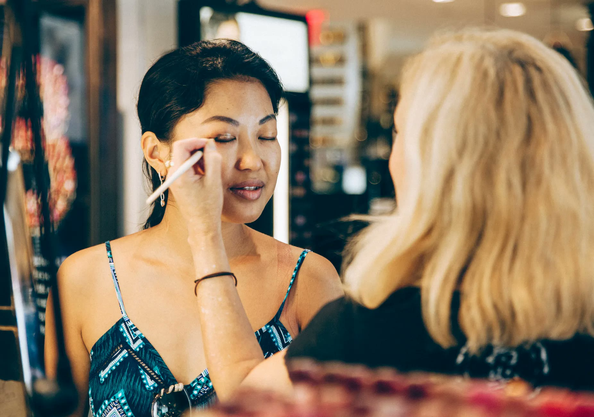
For creators · Finding workHow beauty creators get booked in New York City
How New York City beauty creators turn trusted recommendations into comped services and paid deals.How beauty creators get booked in Nashville
How Nashville beauty creators turn local trust into comped services and paid bookings for salons, barbers and glam.How beauty creators get booked in Miami
Miami beauty creators turn local reach in Brickell and Coral Gables into comped services and paid bookings on Magpie.How beauty creators get booked in Los Angeles
How Los Angeles beauty creators turn a trusted local niche into comped services and paid bookings.How beauty creators get booked in Austin
How Austin beauty creators turn chair content into comped services and paid bookings at their own rate.How beauty creators get booked in Atlanta
Atlanta beauty creators, from braiders and barbers to glam artists, get comped services and paid bookings ranked by local reach. For creators · Finding work
For creators · Finding work
How to get brand deals with 1,000 followers
The 30-day plan for the exact 1,000-follower milestone: what businesses see at your size, and the first five moves.Do brands work with creators under 10,000 followers?
National brands shop big. Local businesses shop location. What sub-10,000 creators actually get booked for.Campus creators: how student creators fit a local market
Current students create for the neighborhoods they live in: fit, categories, campus timing, and fair terms.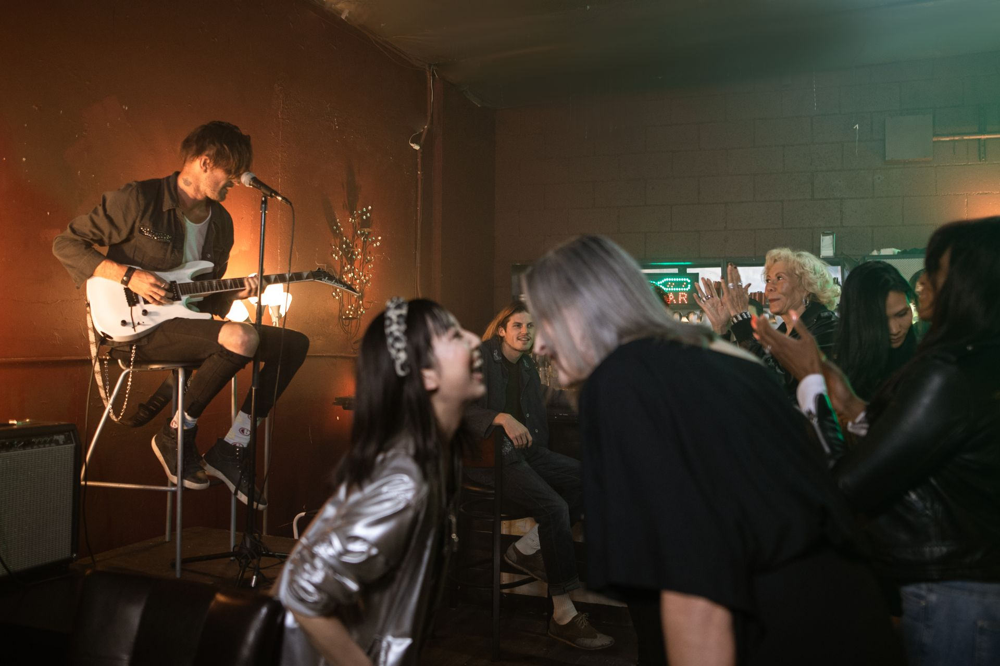
For creators · Finding workHow Nashville creators get booked
Local reach is the headline number in a visitor town. Both lanes, the standard visit, and founding enrollment.How to start being an influencer in 2026: the step-by-step guide
The zero-to-booked roadmap: pick a corner, post your first ten, land a visit and set a rate. For creators · Finding work
For creators · Finding work
How to pitch a local business as a small creator
What owners actually reply to, a pitch that fits on one screen, and the roster shortcut.How to be a creator with 500 followers (and why it is enough)
Why 500 local followers are enough to begin, what to do first and what to skip. For creators · Finding work
For creators · Finding work
The best ways to be a creator in 2026, ranked
Nine strategies ranked, with local first at number one and a practical order for building from small.How to get brand deals with a small following
Local businesses buy where your audience lives. Here is how small creators get booked.Working with creators
For businesses: how to pick creators, brief them well, and handle it when things go sideways.
51 guidesReels vs. photo posts for a local business: what actually gets saved and shared
Reels prove the experience, photo posts carry the details. What each format gets saved and shared for, what to ask for by category, and why the format belongs in the brief.Do you need a platform, or can you just DM creators yourself?
DMing is free in cash and expensive in everything else. The honest comparison, and what a platform actually carries.Find local micro influencers for your yoga studio
Five genuine ways to find local micro influencers for a yoga studio, from location tags to a roster ranked by local reach.How small cafes find micro influencers with local followers
Small cafes find micro influencers with local followers by starting at their own counter and working outward to a local roster.Which platform finds local influencers by follower count and location?
Magpie shows every creator's local follower count and local percentage before you choose, and ranks by local reach, not total followers.Do local influencer platforms handle payment and contracts, or just introductions?
Not just introductions: terms set in the booking, payment held until the post is live, and a 90-day license on paid bookings.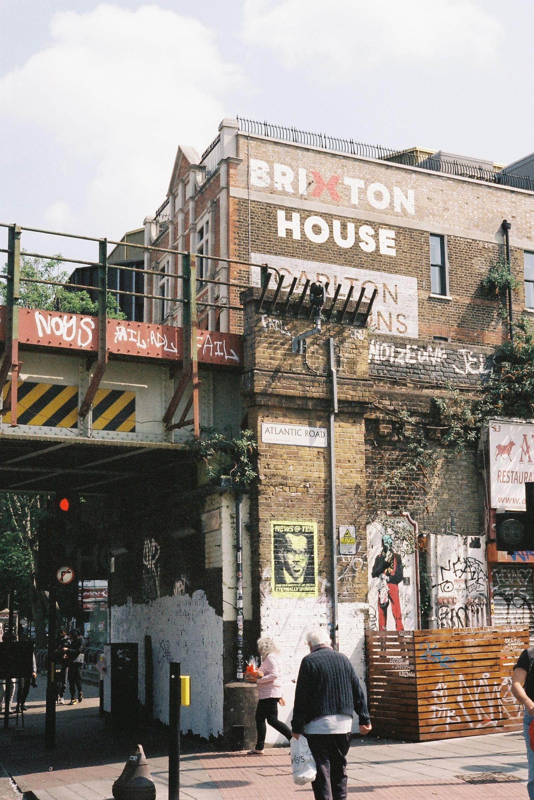
For businesses · Working with creatorsThe Collabstr alternative built for local businesses
Collabstr is a general creator marketplace. Magpie is the alternative built for local businesses: a city roster ranked by local reach.Micro influencers vs. big influencers: what actually works for a local business
Geography decides it: one big audience spread nationwide, or several small ones within driving distance.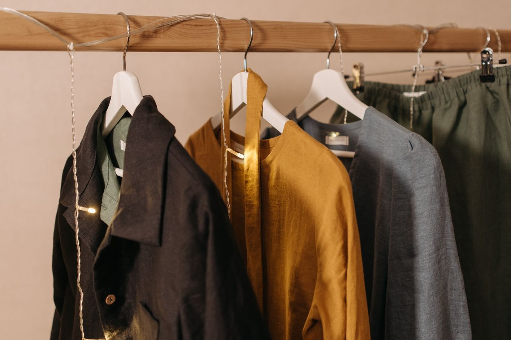
For businesses · Working with creatorsMagpie vs Storytime
The two closest models in local creator marketing, compared on the map, the money and the audience data.Magpie vs Mustard
Automated campaigns priced by creator count, or a city roster chosen by local reach: the honest differences.Magpie vs Hummingbirds
Two local creator platforms, two different buyers: managed retail campaigns for product brands, or a roster for businesses people visit.Influencer marketing for salons and barbershops
An empty chair costs the product and the hour. Why salons and barbershops are built for creator visits.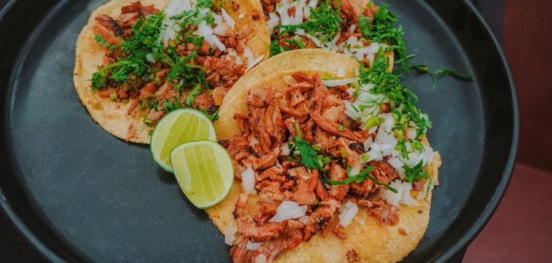
For businesses · Working with creatorsInfluencer marketing for restaurants: how a creator night works
What a creator night is, how it runs hour by hour, what it costs, and what lands in your content library.How to run a comped creator visit at your business
The operating playbook: what to offer, the written deliverable, the register code, and the Visit Guarantee.How to find influencers in your city
Roster over hashtag search: the five-minute vetting routine and the red flags that end the conversation. For businesses · Working with creators
For businesses · Working with creators
How to find food creators in Virginia Beach
How Virginia Beach restaurants find food creators ranked by local reach, from Shore Drive to Pungo.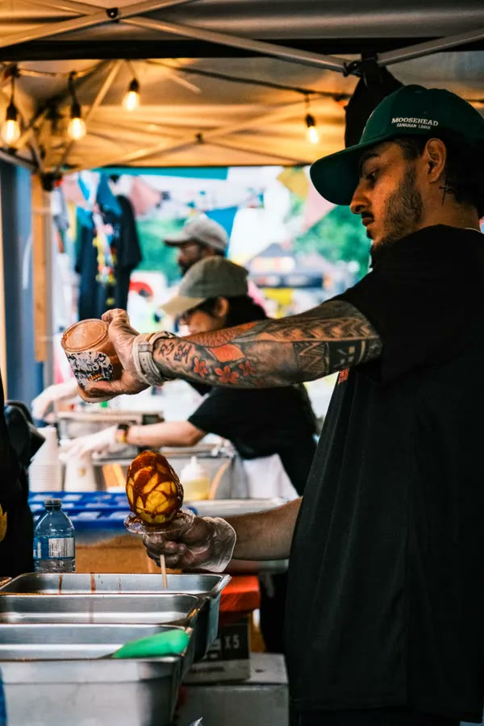
For businesses · Working with creatorsHow to find food creators in Toronto
Toronto businesses find food creators by neighborhood local reach, from Kensington Market to Scarborough plazas.How to find food creators in New York City
A neighborhood first guide to finding and booking New York City food creators by real local reach.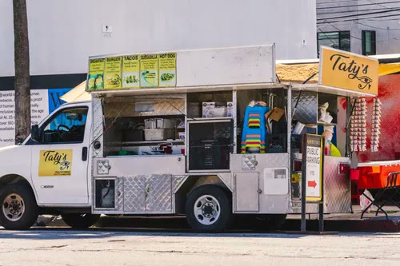
For businesses · Working with creatorsHow to find food creators in Nashville
How Nashville restaurants find food creators by local reach, from hot chicken counters to meat and three lunch rooms.How to find food creators in Miami
Wynwood to Little Havana: finding Miami food creators whose audiences, Spanish-speaking included, can actually visit.How to find food creators in Los Angeles
A neighborhood first guide for Los Angeles restaurants, trucks, and markets that want food creators with real local reach.How to find food creators in Austin
Find Austin food creators by local reach and book comped visits or paid posts that fill real neighborhood rooms.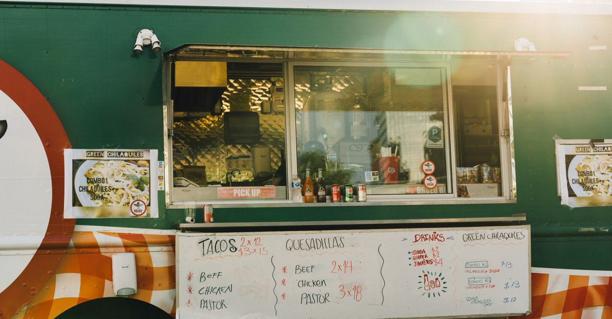
For businesses · Working with creatorsHow to find food creators in Atlanta
Atlanta restaurants can find food creators by local reach across Buford Highway, the BeltLine, and Decatur, not by follower count alone.How to find fitness creators in Virginia Beach
How Virginia Beach gyms and studios find fitness creators ranked by local reach, from the boardwalk to First Landing.How to find fitness creators in Toronto
Toronto gyms and studios find fitness creators by local reach, training style and season.How to find fitness creators in New York City
A training style first guide to finding and booking New York City fitness creators who drive real trials.How to find fitness creators in Nashville
How Nashville gyms and studios find fitness creators by local reach, from Shelby Bottoms run clubs to Gulch classes.How to find fitness creators in Miami
Miami gyms and studios can find fitness creators by local reach and format fit, from beach sunrise sessions to Wynwood lifting.How to find fitness creators in Los Angeles
How Los Angeles gyms and studios find fitness creators by training style, place, and local reach that fills classes.How to find fitness creators in Austin
Find Austin fitness creators by local reach and fill classes with comped sessions and paid training bookings.How to find fitness creators in Atlanta
Atlanta gyms and studios can find fitness creators by local reach across the BeltLine, Piedmont Park, and neighborhood studios.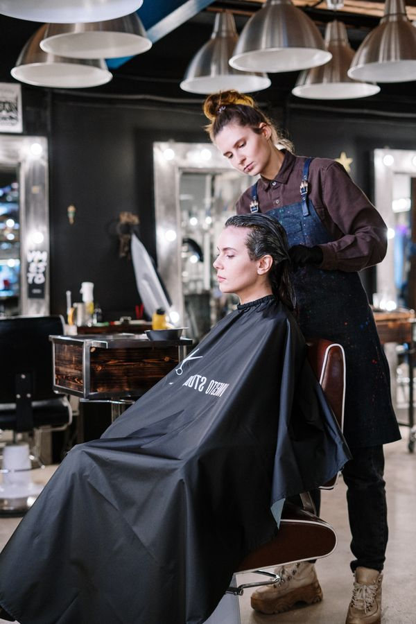
For businesses · Working with creatorsHow to find beauty creators in Virginia Beach
How Virginia Beach salons and spas find beauty creators ranked by local reach, from Hilltop to Red Mill.How to find beauty creators in Toronto
Toronto salons and barbershops find beauty creators by local reach, specialty and neighborhood trust.How to find beauty creators in New York City
A specialty first guide to finding and booking New York City beauty creators who can fill real chairs.How to find beauty creators in Nashville
How Nashville salons, barbershops and glam artists find beauty creators by local reach instead of follower count.How to find beauty creators in Miami
Miami salons and med spas can find beauty creators by local reach, language fit and reliability, not follower count alone.How to find beauty creators in Los Angeles
How Los Angeles salons, spas, and studios find beauty creators by service, neighborhood, and real local reach.How to find beauty creators in Austin
Find Austin beauty creators by local reach and fill chairs with comped services and paid glam bookings.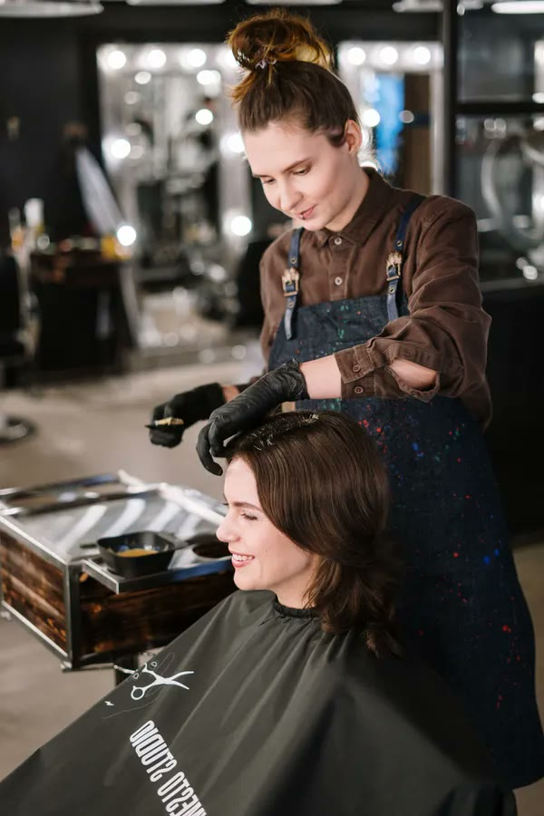
For businesses · Working with creatorsHow to find beauty creators in Atlanta
Atlanta salons, barbers, and glam studios can find beauty creators by local reach and specialty, from braids and wigs to Buckhead glam.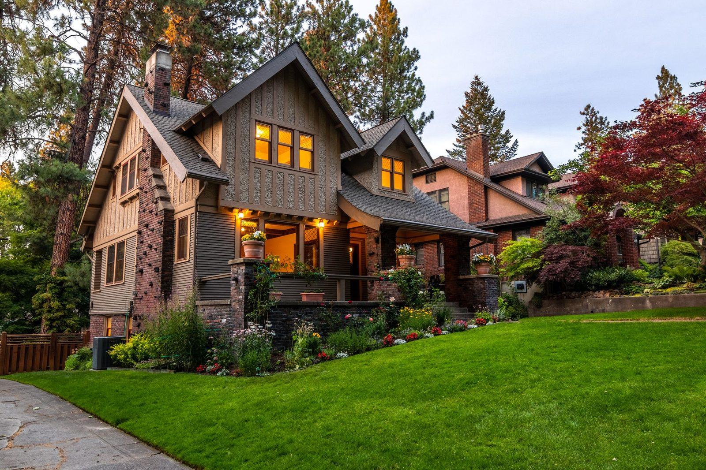
For businesses · Working with creatorsThe best local influencer marketing platforms
Magpie, Hummingbirds, Storytime, Mustard and the DIY route, matched plainly to the businesses each one actually fits.Why influencer platforms hide their prices
Quote-only pricing lets a platform size the number to your budget. The five numbers a small business should be able to read before any sales call, and the published rates Magpie puts on the page instead.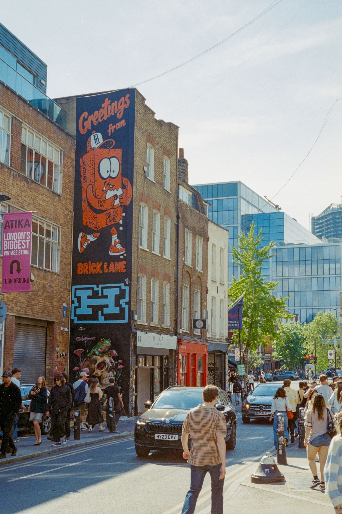
For businesses · Working with creatorsHow to tell if a creator's followers actually live in your city
Follower count does not tell you who can walk in. The checks that show where an audience actually lives, before you pay.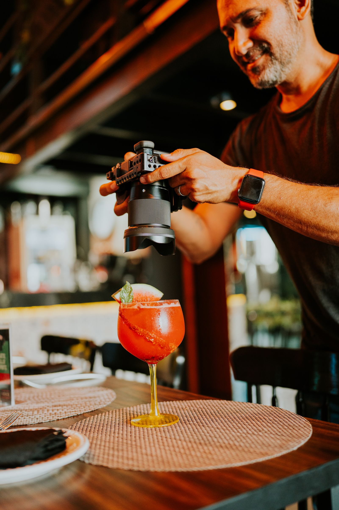
For businesses · Working with creatorsUGC for local businesses: what it is, what it costs, and why local beats generic
Generic UGC gives you a file. A local creator post gives you the file plus a local audience that already follows the person who made it.How to run a creator night at a restaurant
A small group, one clear deliverable, staff briefed before doors, and follow up while the posts are fresh.UGC vs. influencer posts: which do you actually need?
UGC buys reusable content for your own channels. A creator post buys local distribution and trust.The influencer took the free meal and never posted. What can I do?
Prevention first, remedy second: how a tracked visit makes a no-post visit not count.How to brief a creator: direction, not a script
The facts, must-mentions, and logistics to share, and the script and verdict to leave out. For creators · Working with creators
For creators · Working with creators
The types of local creators businesses book first, ranked
A fun field guide to the regulars, reviewers, guides and specialists businesses understand fastest.Creator red flags and green flags: what gets you booked in 2026
The habits that make a creator look bookable, plus the signals that quietly end the conversation.What brands actually look for in local creators
Local audience, consistency, reliability: the things that get you picked, in order.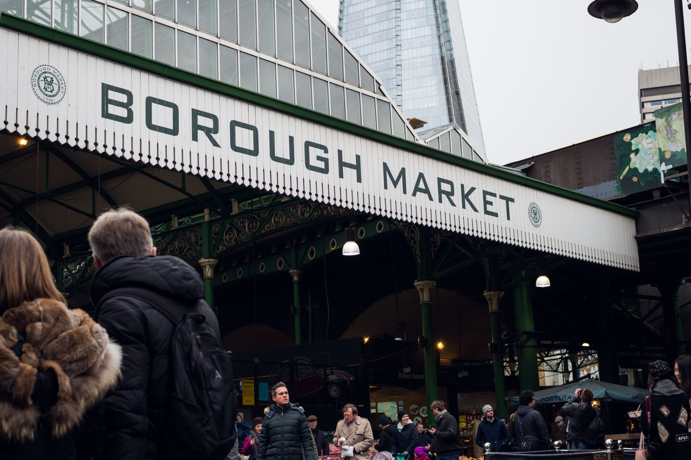
For businesses · Working with creatorsMicro or big? For a restaurant, it is not close.
Why a restaurant should buy the audience within driving distance, not the biggest number.Local marketing
Creator visits as a local marketing habit: reviews, seasons, regulars, and proof it worked.
38 guides For businesses · Local marketing
For businesses · Local marketing
Local influencer marketing when you run more than one location
Four locations means four local audiences. One platform, one set of terms, a local roster in each city.Find local nightlife influencers to pack your bar
Friday night is a distance problem: nightlife creators ranked by local reach, so happy hour posts land on people who can come.Book local beauty influencers for your grand opening
A grand opening is a one-day local event: book beauty creators whose followers live in your city, anchored by one paid name. For businesses · Local marketing
For businesses · Local marketing
The best local influencer platform for restaurants
The honest roundup for restaurants: the platforms compared on what a dining room actually needs, local audiences first.Which platform is best for salons and spas?
For a salon or spa, the best platform fills chairs with neighbors: beauty creators ranked by local reach, aimed at the slow weekdays.Richmond bakeries, salons and studios: a creator visit playbook
Weekday visits matched to each trade: bakeries own the morning, salons fill the midweek chair, studios fill the off peak class, all with neighborhood creators picked by local reach.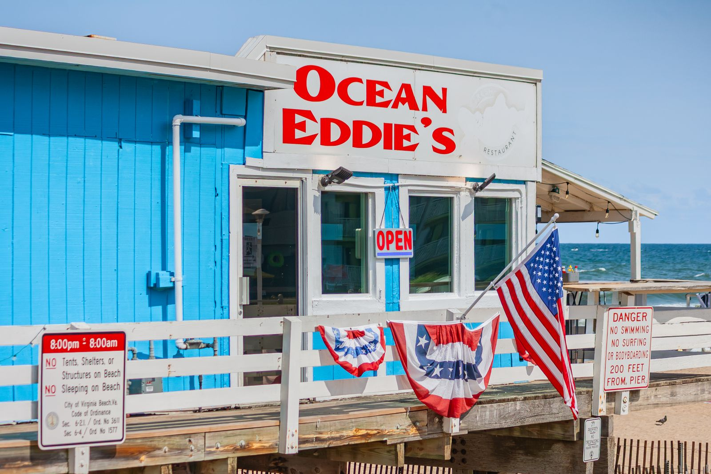
For businesses · Local marketingInfluencer marketing for Virginia Beach restaurants
Seafood houses and oyster bars: creator nights that fill tables past the summer season.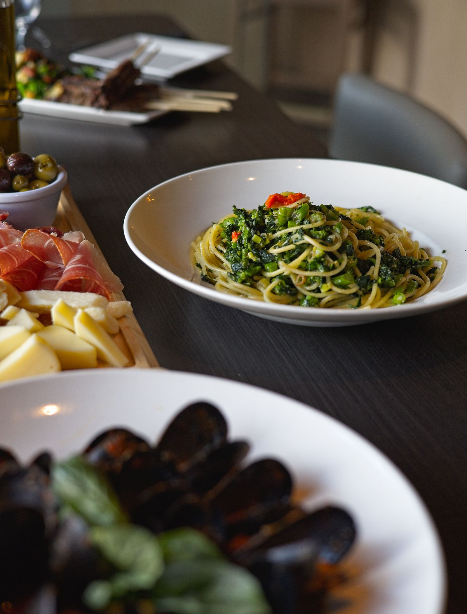
For businesses · Local marketingInfluencer marketing for Toronto restaurants
Queen West to the Danforth: creator marketing for Toronto restaurants.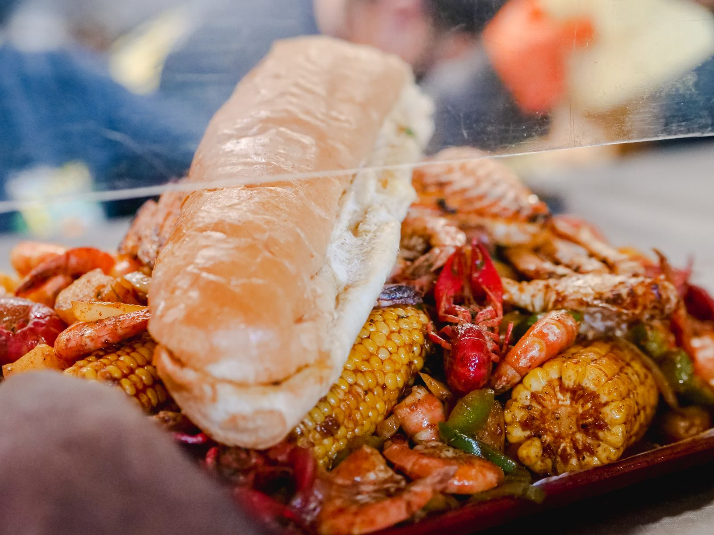
For businesses · Local marketingInfluencer marketing for Tampa restaurants
Cuban coffee and patio season: creator marketing for Tampa restaurants.Influencer marketing for Seattle restaurants
Coffee corners to Capitol Hill: creator marketing for Seattle restaurants.Influencer marketing for San Diego restaurants
Barrio Logan to La Jolla: creator marketing for San Diego restaurants.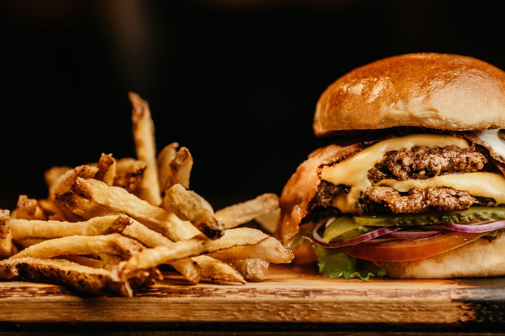
For businesses · Local marketingInfluencer marketing for Salt Lake City restaurants
Valley tables and ski season crowds: creator marketing for Salt Lake City restaurants. For businesses · Local marketing
For businesses · Local marketing
Influencer marketing for Richmond restaurants
From the Fan to Church Hill: creator marketing that fills Richmond dining rooms.Influencer marketing for Raleigh restaurants
Glenwood South to North Hills: creator marketing for Raleigh restaurants that need regulars.Influencer marketing for Phoenix restaurants
Old Town to Chandler: creator marketing for Valley restaurants.Influencer marketing for Orlando restaurants
Milk District to Restaurant Row: creator marketing for Orlando restaurants.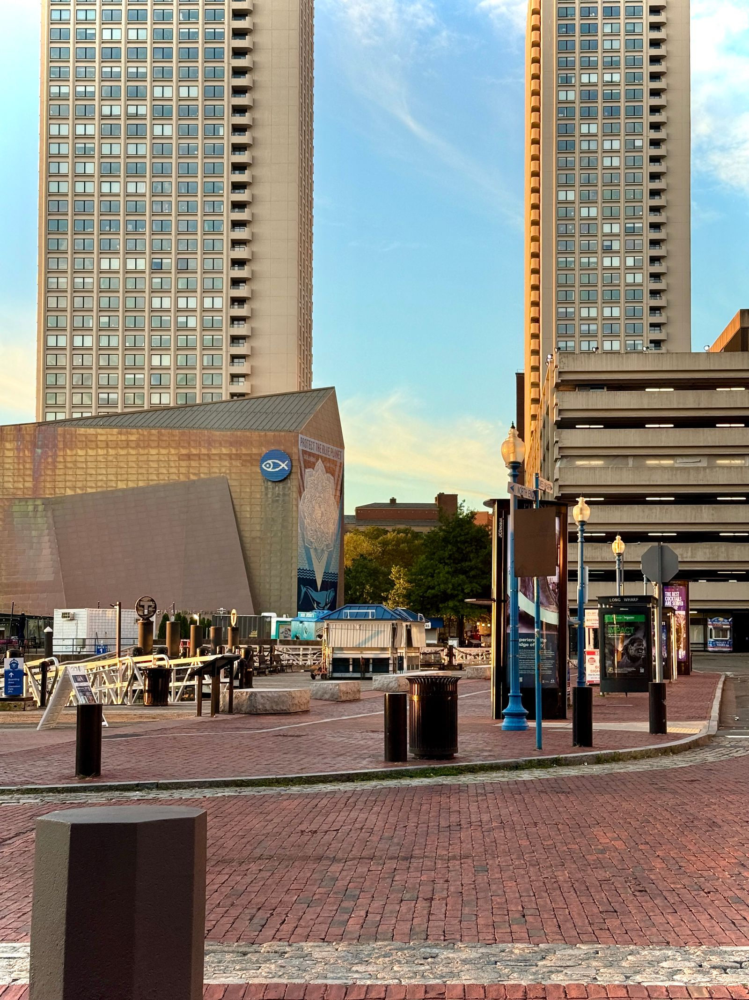
For businesses · Local marketingInfluencer marketing for Norfolk restaurants
Homecomings, ship schedules and Ghent regulars: creator marketing for Norfolk restaurants.Influencer marketing for New York City restaurants
Slice shops to food halls: creator marketing for NYC restaurants.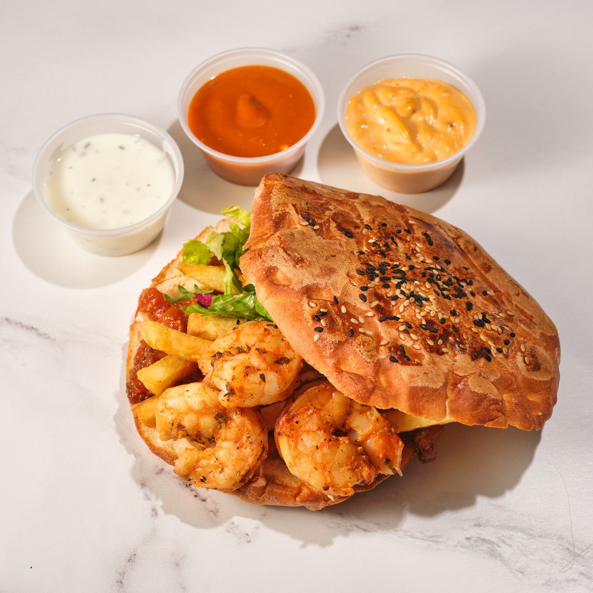
For businesses · Local marketingInfluencer marketing for New Orleans restaurants
Neighborhood rooms over Quarter crowds: creator marketing for New Orleans restaurants.Influencer marketing for Nashville restaurants
Broadway brings visitors. Neighborhoods bring regulars. Creator marketing for the Nashville that lives here.Influencer marketing for Los Angeles restaurants
Grand Central Market to Sawtelle: creator marketing for LA restaurants.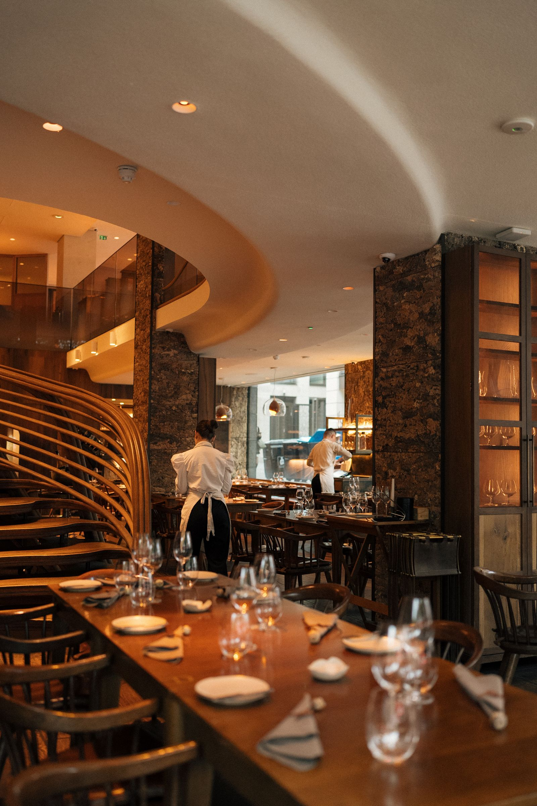
For businesses · Local marketingInfluencer marketing for London restaurants
From Borough Market to Peckham: creator marketing for London restaurants.Influencer marketing for Las Vegas restaurants
The workforce eats off-Strip: creator marketing for Las Vegas restaurants.Influencer marketing for Houston restaurants
Montrose to Asiatown: creator marketing for Houston restaurants.Influencer marketing for Denver restaurants
RiNo to Aurora: creator marketing for Denver restaurants.Influencer marketing for Dallas-Fort Worth restaurants
Deep Ellum to the Stockyards: creator marketing for DFW restaurants.Influencer marketing for Chicago restaurants
Restaurant Row to Hyde Park: creator marketing for Chicago restaurants.Influencer marketing for Boston restaurants
Seafood shacks and September resets: creator marketing for Boston restaurants.Influencer marketing for Austin restaurants
SoCo to the Domain: creator marketing for Austin restaurants that live on locals.Influencer marketing for Atlanta restaurants
Inman Park to Decatur: creator marketing for Atlanta restaurants.Washington DC creator marketing: neighborhoods, not reach
DC buys by neighborhood, not by citywide reach. Pick creators neighborhood by neighborhood, judge them by local reach, and sequence visits across the metro.Nashville bars and venues: booking local musicians who post
Book the night like a creator visit: a local musician plays, posts to a Nashville audience that can come back next week, and the terms are written before load in.Turn one creator visit into a regulars habit
The post is the introduction. The return reason, the second invite, and the creator relationship are what make it compound.A seasonal campaign calendar for local businesses
Plan creator visits around openings, holidays, school terms, festivals, sports, and the slow weeks that need a reason to visit.DC restaurants: creator visits for less than one influencer post
A month of neighborhood creator visits on one plan, for less than one national influencer post.How to track micro-influencer marketing ROI
Creator codes at the register, a tracked floor, and media value labeled as the model it is.Black Friday marketing for local businesses
Skip the discount war: creator visits in the Nov 23-27 window, a week-by-week plan, and the Burst.More Google reviews, without begging.
Honest review habits that work, and the shortcuts that get listings penalized.The local scene
The ideas under Magpie: local reach, Momentum, the cities where this is taking off, and the words we use.
13 guidesLocal reach vs. follower count: which one gets you booked?
Followers times local share equals neighbors who can walk in. The head-to-head, with the math worked out.Seattle creators to watch
Forty Seattle creators, picked by hand: rooted in the city, posting for the people who live here. The list Seattle launches with.Raleigh creators to watch
Forty Raleigh creators, picked by hand: rooted here in the Triangle, posting for the neighbors who live here. The list Raleigh launches with.London creators to watch
Forty London creators, picked by hand: rooted in the city, posting for the people who live here. The list London launches with.Dallas–Fort Worth creators to watch
Forty Dallas-Fort Worth creators, picked by hand: rooted in the metro, posting for the people who live here. The list Dallas launches with.Chicago creators to watch
Forty Chicago creators, picked by hand: rooted in the city, posting for the people who live here. The list Chicago launches with.Local creator marketing glossary: words worth getting right
Plain definitions for local reach, comped visit, paid booking, deliverables, disclosure, usage rights, UGC, and Momentum.Is Magpie legit?
What the company is, what it costs each side, and the facts you can check before signing up.The it-city moment, at 3,000 followers
The award winners are a former realtor, a former CPA and neighborhood accounts. The trend, translated for a few thousand followers.Nashville is becoming the it city for local influencers
The Tennessean asked the question. The agencies, awards and a Michelin ceremony answered it. Why the moment belongs to local creators.Momentum: how posting on time gets you booked more
Points for on-time posts raise your visibility to local businesses. Reliability is the pitch.The best cities for local influencers, ranked
Nine cities graded on small-creator depth, independent businesses, provable local reach and proven demand. Nashville makes the podium.What is local reach, and why do brands care more than your follower count?
The share of your audience that lives in your market, the math behind it, and how to raise it.No guides match that… yet
Try a shorter search, or clear the filters to browse everything.
How to find local influencers, city by city: Boston · Chicago · Dallas-Fort Worth · Houston · Las Vegas · London · Los Angeles · New Orleans · Norfolk · Orlando · Phoenix · Salt Lake City · San Diego · Seattle · Tampa · Virginia Beach · Atlanta · Austin · Denver · Hampton Roads · Miami · New York City · Raleigh · Richmond · Toronto · Washington DC · Nashville. Every guide covers where that city’s creators actually are, what to offer them, and what it costs.
Get started
Founding rosters are forming now in 45 markets.
Businesses join the founding list to book local creators as their market opens. Creators claim a founding spot to build a profile, set a rate, and see offers first in sign-up order.
Magpie is free for creators. Always.